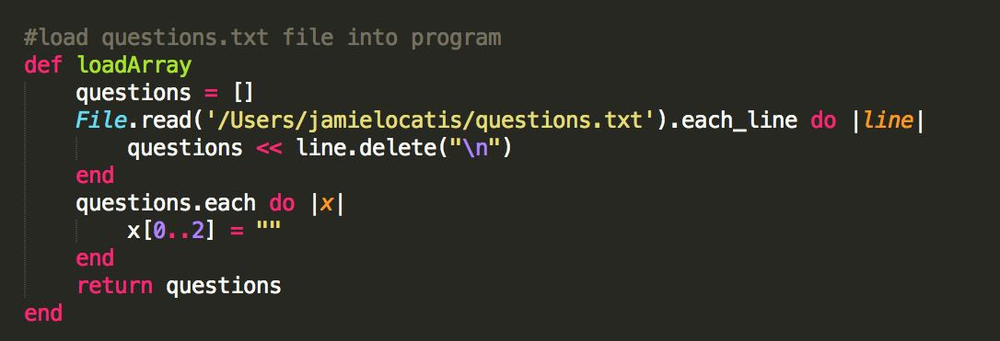
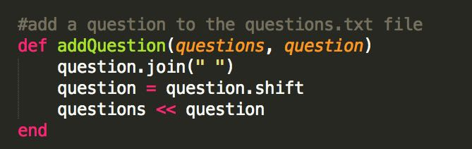
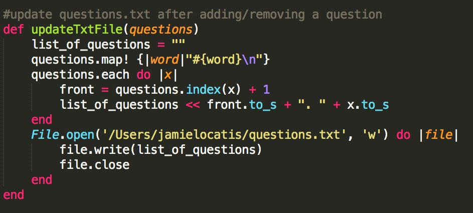
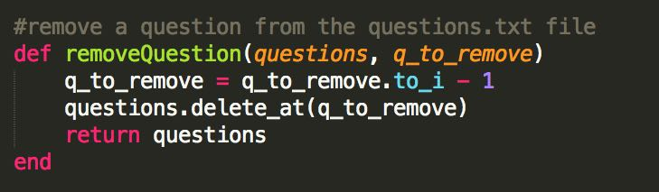
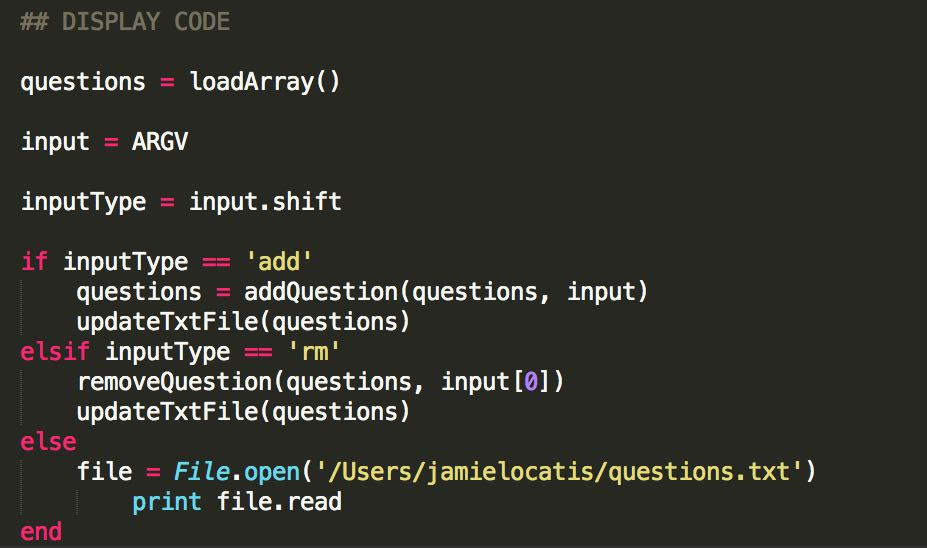

Write your very own Question Tracker program using Ruby! You'll be able to access the program directly from the CLI (command line interface), making jotting down notes as you code easier than ever!
First let's write the code to load our text file into our program. We will be defining what is called a function, a series of code that we can reuse without the need to be constantly re-typing it. Inside of this function we will be defining an empty array, a list of items, called questions. We will use a File.read method to look into our text file and extract the questions that were last saved (or in the case of your first time, an empty file). The next line is looking at every question and deleting something called "\n" (we'll talk about this a bit later). Your code should look like this:
A lot is going on there, but if you study it you should be able to see what it does. We start the empty questions array and call up the file to read. Next you see a loop (questions.each do). This is going to "loop" through the array, our list of questions. For each question in the list (which if you look at the loop, will be represented by x) we are asking the computer to do something for us. In this instance we are looking at the first three characters of the sentence and asking them to be replaced with a blank space (represented with the ""). This is becuase when we store the questions we give them display numbers, but as we have the computer process through them we won't have a need for them. You might also be asking yourself, but we only are saying 0-2 right? In a lot of programming languages, including Ruby, positions of items and objects begin at 0 instead of 1. At the very end of this function we return the questions loop, now filled with the questions from our .txt file. Using this function we have a basis to display questions stored in a file, and look at how we might go about adding and deleting questions.
Next let's look at adding a question to our list. We will accomplish two things here, which will save us time in the next step! By using functions we can break out some of the code we would need to add a question that we would also use to remove a question. The first function we need to create will actually let us add a question. Take a look:
Take a moment to look at the function addQuestion, what do you think every line is accomplishing? For starters you might notice we have something new on the line where we define the function: def addQuestion(questions, question) Here we are bringing information, variables from other areas of the code and passing them through the addQuestion function. So we are saying we will need a "questions" set of data (remember our "questions" array from above), and of course our single question which we will be adding. In the first line we use an object method, in this case the string.join method. As you learn Ruby you will begin to understand all of the different data types (so far we have talked about arrays and strings), but for now we can assume that this method will join our question into one long string. So instead of the words existing individually on their own in a list, the entire sentence will be one "piece" of our array. The next line isn't as obvious, but we are using another string method, this one is called shift. A quick google search would tell you what it does. Here we are using it to "shift" the sentence we just made outside of it's list. Why? Because on the next line we use the "<<" shovel brackets to add our new question to our current list of questions. If we didn't use .shift to move our new question out of an array, we would be creating an array within an array. At some point you'll be doing this, but it isn't neccassary for our program (and it would make it a lot harder to work with).
Next we will write our reusable function I mentioned above (the one that will work for both adding and removing questions). I've called this one def updateTxtFile(questions):
Like before, let's walk through this line by line to see if we can figure out what is happening. First we are again passing in some information, "questions", from outside the function. Again it will be our array of questions we've been using. Next we create a new "empty" string variable. The next line is a bit tricky, but a good google search would yield it's purpose. We are using .map! method on our questions array to "map" over the array and add this special character, "\n" to the end of all of our questions. This line is a loop, like we used earlier in the first step. It will find the end of every item in our list (which right now with what we have done an item = a question), and tack on a "\n". If you haven't looked up what "\n" does yet, it creates a newline in the text. When you are typing in a word processor and hit enter to go to the next line, well that's what "\n" is doing for us here. Now we just need to add the numbers back onto the front of our questions for display, and we can "update" the .txt file we are storing these questions in. The next line is another loop like we saw in the loadArray function. It is going to "loop" through each item in our questions array, using "x" to represent which item of the array we are currently on. The first line of this loop will figure out which number question we are on and print it. We are creating a new variable called front, and setting it equal to the "index" position of x (x being the current question we are on). Everything in our array has an "index" value given to it by the computer, so we can use this to our advantage to let the computer number our sentences for us. And remember how I mentioned that Ruby will start counting at 0? That's why we do questions.index(x) + 1. Otherwise our first question will be labeled as 0. In the last line of the loop we again use the "<<" shovel brackets to combine our two variables (the question number and the question itself) together to form our list of questions! Remember the loop is doing this for each question, building a clean text list of our questions. The next few lines will write our newly formed list to our file, 'questions.txt'.
We have one more function to write, removing questions. Have a look at the code:
So first off we are passing in two things this time, our array of questions and the question we want removed (q_to_remove). To make this program easy, we just want to type in the number of the question to have it removed. So q_to_remove should be a number. So on the next line we convert q_to_remove into an integer and subtract 1. But the user typed a number in right? In the case of the CLI, the computer will see the number as a string, since it was mixed in with letters. So now you have a third data type (remember: we've had arrays, strings, and integers). Much like the other two, integers also have a lots of different things you can do to them. Also, figure out why we subtracted 1? We added 1 to the display number above right so we didn't have zero? Well on the next line of code we use the array method .delete_at to delete our question based on it's integer "index" position. So we need to make sure we are deleting the right question by returning everything to it's original number. And of course at the end we return the questions array back to where it came from. But where was that? Let's finish our program and write the code that will bring all of this together!
So below you see the final piece of our programing puzzle. Above we built reusable functions that will make this part super easy for us. All we essentially have to do is figure out how to take what you type in the CLI, and tell the computer which one of the functions above is the one you are attempting to use. Take a look:
First we need to populate our list of questions, our array. So we set questions equal to loadArray(). The computer will now run this function, and fill the questions array with our data. Next we set input equal to something called "ARGV". This is just telling the computer that we are going to use arguments from the CLI to help tell it what to do. To run this ruby program in your command line you would type:
ruby main.rb
We want to be able to add/remove questions by just adding onto that command, like so:
ruby main.rb add "This is a test question?"
ruby main.rb rm 1
The computer uses ARGV to create an array of words based on everything typed after the ruby main.rb command. We call these arguments, things added onto the command to do something different. This is why above in the addQuestion function we needed to join our words together as one sentence, because as they are typed into the CLI the computer will use ARGV to treat each word as a separate item in our array. On the next line we use the method shift again, and set it equal to inputType. Figure out what shift is doing this time? It takes the first item of the array and will shift it into the the new variable inputType. So we are taking the "add" or "rm" and making it it's own thing so we can tell the computer what to do.
The last piece of our code! We use what is called an if/else statement to help the computer figure everything out. We say "if" the inputType we just created above was "add", go ahead and run the addQuestion function. And after that, run the updateTxtFile function. Notice when we use these functions, we match what information we want to put in with what information we asked for above. Example:
Up above we defined our add question function as addQuestion(questions, question)
So down below when we told the computer to use that function, we used addQuestion(questions, input)
We sent in our questions array, as well as our input array.
Notice how the if/else statement is structered. So we already said "if" inputType is "equal to" (represented by ==) "add" than do this. But what if it's not? So next we say "else if" (stylized in Ruby as elsif) inputType is "equal to" "rm", run the the removeQuestion and updateTxtFile functions. What if neither of those were typed in? We end our if/else statement with our "else", if nothing above worked, the computer will do this. In this case we just print out our list of questions.
The last piece of our program will involve just the command line in your terminal. We are going to make it so you can just type "questions" plus your arguments to access your program. That's better than having to type out "ruby main.rb" everytime right? Yes! If you remember above when I asked you to type "#!/usr/bin/env ruby", this is where it comes into play. Usually when you run your program you type the "ruby" before your Ruby file, that is how the computer knows to run it as a Ruby program. This line in your code will tell the computer what programing language your program is using. Go to your terminal and make sure you are inside the directory where your question tracker program is stored.
Now you should be able to access and use your program quickly from anywhere in the CLI!